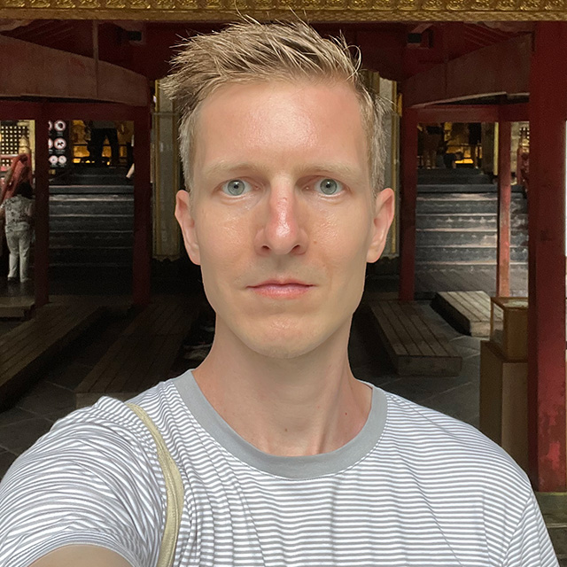

Vladimir Mokry
“Sometimes I draw what I want to do. The rest of the time, I draw what I have to.”
366letter Installation at Deloitte Prague exhibition · Aug 2018
366letter Solo Exhibition at Kavárna co hledá jméno exhibition · Jul 2018
How I climbed hydrometeorological tower talk · May 2026
How I hitchhiked to Montreal talk · Mar 2026
Pecha Kucha Night Tokyo 153 talk · Dec 2017
Entrepreneurship Exchange Program: Let's Talk About Design talk · Jul 2017
Pecha Kucha Night Ostrava 25 talk · Dec 2016
Náhodná cesta do prosluněného pole v Srbsku talk (Czech) · Oct 2016
San Francisco – Představy a realita talk (Czech) · Mar 2016
NEW Function First: Building Worlds That Work interview · Aug 2026
Working as a Senior Concept Artist in Game Development interview · Feb 2025
Career Tales: Vladimir's Story interview · Jul 2022
#3 Concept Artist Vladimir Mokry – The Name of Our Podcast is.. podcast · Jun 2020
Back to School in 32: Interview with Vladimir Mokry interview · Apr 2019
Deloitte dReport: Nechci být designer, chci být umělec, a mám poslední šanci, abych to změnil, říká Vladimír Mokrý interview (Czech, archived) · Aug 2018
Snídaně s Novou – Use-it Map Prague TV interview (Czech) · Jul 2017
Techstars Community Voices: Interview with multidisciplinary designer interview · Jan 2017
Lidové Noviny: Mobil vyhledá partnera k poklábosení article (Czech) · May 2016
UX Designer Fights For His Users interview · Mar 2015
Rookie of the Year – Concept Art – Finalist Jul 2020
AT&T Hackathon 1st Prize Winner – app Babble Designer · Apr 2016
Dean’s Prize – Art Culture Week IV. Jul 2013
2nd place of Faculty of Education Website Contest Feb 2009
Thamira: The Sorceress – mobile game Creative & Art Director · 2021–2022
Covidbility – infection probability calculator (obsolete data) Apr 2020
Kilta – network of trusted experts Member · 2018–2020
Status Quack – design and prototyping studio Product Design, Partner · 2017–2018
Jack – personalised gifts delivery B2C service Design Lead, Co-founder · 2015–2017
Techsquat – non-profit co-work & co-live community 2012–2017
Prague use-it map – paper map of Prague for young travellers Design Lead · May 2017
366letter – art project, one drawn letter each day of 2016 Instagram · 2016
WhatTheHack – hackathon Idea, Organiser · Apr 2016
Kdyjedeš – travelling with friends together & B2C service Design Lead, Co-founder · 2012–2014
Syn Studio – Concept Art Diploma (ACS/AEC) 2018–2020
Masaryk University – Department of Art, Faculty of Education (Masters/Mgr.) 2007–2012